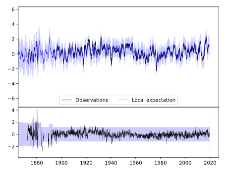
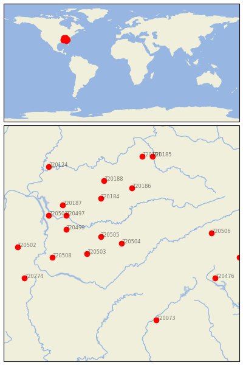
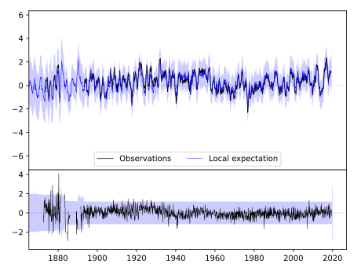
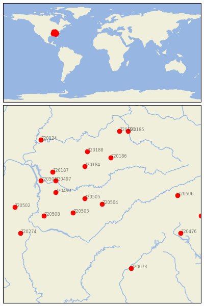

MC MINNVILLE [USA]
 


| Neighbour | Name | Country | Distance | Lon/Lat | Years |
|---|
| 720504 | MC MINNVILLE | USA | 3 | -85.8, 35.7 | 1872-2019 |
| 720505 | MURFREESBORO 5 N | USA | 58 | -86.4, 35.9 | 1883-2019 |
| 720503 | LEWISBURG EXP STN | USA | 96 | -86.8, 35.4 | 1888-2019 |
| 720499 | DICKSON | USA | 150 | -87.4, 36.1 | 1885-2019 |
| 720184 | BOWLING GREEN RGNL A | USA | 154 | -86.4, 37.0 | 1878-2019 |
| 720497 | CLARKSVILLE WWTP | USA | 169 | -87.4, 36.5 | 1854-2019 |
| 720186 | GREENSBURG | USA | 179 | -85.5, 37.3 | 1890-2019 |
| 720508 | WAYNESBORO | USA | 186 | -87.8, 35.3 | 1884-2019 |
| 720187 | HOPKINSVILLE | USA | 195 | -87.5, 36.8 | 1893-2019 |
| 720188 | LEITCHFIELD 2 N | USA | 205 | -86.3, 37.5 | 1893-2019 |
| 720501 | DOVER 1 W | USA | 208 | -87.9, 36.5 | 1893-2019 |
| 720506 | NEWPORT 1 NW | USA | 236 | -83.2, 36.0 | 1879-2019 |
| 720073 | NEWNAN 5N | USA | 261 | -84.8, 33.5 | 1882-2019 |
| 720476 | WALHALLA | USA | 269 | -83.1, 34.7 | 1884-2019 |
| 720502 | JACKSON EXP STN | USA | 271 | -88.8, 35.6 | 1891-2019 |
| 720274 | BOONEVILLE | USA | 277 | -88.6, 34.7 | 1889-2019 |
| 720191 | SHELBYVILLE 1 E | USA | 283 | -85.2, 38.2 | 1888-2019 |
| 720185 | FRANKFORT DOWNTOWN | USA | 289 | -84.9, 38.2 | 1893-2019 |
| 720124 | MT VERNON | USA | 307 | -87.9, 37.9 | 1887-2019 |
| 720393 | HENDERSONVILLE 1 NE | USA | 310 | -82.4, 35.3 | 1879-2019 |